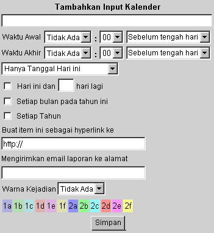

| Tentunya, untuk menggunakan utilitas kalender dengan benar, anda perlu dapat untuk menambahkankan entri di dalamnya. Hal ini mudah dilakukan dengan menggunakan aksi ubah yang sudah disediakan pada lihat kalender sehari-hari (Lihat bagian
Sebelumnya
mengenai informasi tersebut). Gambar berikut ini adalah diagram dari ruang editor di samping kanan daftar kejadian.
OpenWebMail membuat anda dapat menambahkan entri secara cukup detail. Tidak ada navigasi ke dalam halaman yang lain untuk menambahkan entri. Di samping anda sudah dapat melihatnya secara sepintas, semuanya ini akan membuat anda lebih mudah. Meskipun instruksi berikut ini mungkin tampaknya cukup rumit, panel entri kalender sudah cukup menjelaskan dan mudah digunakan dengan bantuan yang cukup sederhana dan ditambah dengan pengalaman anda.
Untuk menambahkan entri, ketik memo anda di dalam kolom teks di bawah Tambahkan Input Kalender. Kemudian anda perlu untuk memilih waktu, pada saat kejadian akan dilakukan. Selain Waktu Awal, pilih jam, menit dan waktu pada hari tersebut saat kejadian yang akan dilakukan. (Sebelum Tengah Hari atau Sesudah Tengah Hari -- Pagi atau Malam). Anda juga dapat memilih Waktu Akhir dari kejadian (diikuti dengan instruksi yang sama seperti Waktu Awal). Jika anda memilih "Tidak Ada" pada Waktu Awal, kejadian akan ditambahkan di bagian bawah dalam daftar sehari-hari, pada waktu yang tidak ditentukan. Anda dapat mengunakan ini pada saat, sebagai contoh, anda sudah mengetahui hari atau tanggal kejadian, tetapi anda tidak mengetahui waktu yang tepat. Jika anda memilih tidak ada Waktu Akhir, maka kejadian tersebut tidak akan dicatat pada waktu akhir.
Anda akan memiliki pilihan untuk menetapkan berapa kali di dalam bulan sekarang kejadian ini akan dilakukan. Jika hanya hari ini saja dimana kejadian tersebut akan berlangsung, tinggalkan default pilihan di dalam menu pilihan ("Hanya Tanggal hari ini"). Bagaimanapun, kejadian ini mungkin akan berlangsung setiap hari pada saat hari yang sama dipilih. Kalender akan secara otomatis mengenali hari tersebut, dan akan disesuaikan menurut menu pilihan. Sebagai contoh, Jika hari ini adalah Hari Kamis, dua (2) pilihan lain anda akan menjadi "Setiap Tanggal 1 Hari Kamis pada Bulan Ini", dan "Setiap Hari Kamis pada Bulan Ini". Ini akan menyesuaikan kejadian dengan arti dari pilihan yang sudah anda dipilih sebelumnya.
Jika anda menginginkan hal yang lebih spesifik, Kalender OpenWebMail mengijinkan anda untuk mendapatkan informasi yang lebih detail. Selain, anda dapat mencocokkan pilihan "Hari ini dan ___ hari lagi" (Dimana "___" adalah kolom teks dimana anda dapat menentukan angka), dan mengganti angka pada kolom teks tersebut sesuai dengan banyaknya kejadian tersebut. Sebagai contoh jika anda memiliki kejadian yang akan mengambil tempat pada saat yang sama dari Hari Senin sampai Hari Kamis setiap minggunya, anda akan memilih Hari Senin dimana kejadian akan berlangsung pada waktu anda melihat kalender secara per bulan, mencocokkan pilihan "Hari ini dan...", dan ketik angka "3" ke dalam kolom teks.
Kotak checkbox yang lain ("Setiap Bulan pada Tahun Ini" dan "Setiap Tahun") mengijinkan anda untuk menaruh kejadian untuk dilakukan secara berkali- kali. "Setiap Bulan pada Tahun Ini" akan menduplikasi kejadian pada setiap bulan. Sama seperti, "Setiap Tahun" akan menduplikasikan kejadian tersebut pada setiap tahun. Efek kejadian ini, sama seperti "Hari ini dan ...", hanya akan berlangsung jika mereka dicocokkan. Dan, karena ini adalah pilihan berupa checkboxes, anda dapat menggunakannya secara simultan dengan mencocokkan lebih dari satu checkbox.
Koneksi Hyperlink ke website atau file dapat membantu anda untuk mengingat informasi lebih detail mengenai kejadian tersebut. Ini dapat berupa link ke website, file sebenarnya atau file fisik di dalam komputer anda. Jika ini adalah link ke file atau halaman pada internet, tinggalkan http:// yang sesuai di dalam kolom teks. Tetapi, jika ini link ke dalam komputer anda, ubahlah menjadi file:///, dan kemudian berikan path ke file tersebut (contoh: file:///c:/my documents/file.ext). Harap dicatat bahwa anda sudah membuat link ke file di dalam komputer local anda, dan dapat diakses hanya dari komputer tersebut, dan bukan yang lain (kecuali, tentunya, file tersebut mungkin juga sudah ada di komputer yang lain yang sedang anda gunakan). Sangat direkomendasikan untuk menjaga http:// berada di dalam kolom teks dan membuat link ke website online untuk memastikan kegunaannya.
Di bawah kotak Mengirimkan email laporan ke alamat, anda dapat mengetik alamat email sebagai pengingat kepada seseorang yang anda inginkan, sebagai contoh anda harus melakukan pertemuan dengannya. Pilihannya, di samping anda dapat mengetik alamat email, sebagai pengingat pribadi. Ketika kejadian dijadwalkan untuk berlangsung, email otomatis akan dikirimkan ke alamat khusus di dalam kotak teks ini.
Warna kejadian dapat diaktifkan agar anda untuk mengkodekan warna kejadian-kejadian anda. Hal ini mengijinkan untuk representatif visual pada setiap jadwal kejadian anda, dimana kode warna dapat dilakukan dengan waktu hari ini, tipe kejadian, atau apapun yang anda inginkan untuk direpresentasikan dengan warna. Untuk mewarnai kejadian anda, pilihan kombinasi angka-huruf dari menu pilihan, yang berhubungan dengan warna-warna di bawah ini.
Akhirnya, setelah anda selesai mengentri data kejadian, dan klik tombol "Simpan" dan data tersebut akan disimpan di dalam daftar kejadian pada hari itu (dan kejadian yang lain yang mungkin sudah anda tetapkan secara berulang-ulang).
Anda juga dapat mengubah kejadian di lain waktu setelah anda sudah membuatnya terlebih dahulu dengan meng-klik tombol [Ed] yang berhubungan dengan kejadian tersebut. Anda dapat mengikuti instruksi di atas untuk mengubah kejadian yang cukup relatif dikenali. Hanya satu hal yang tidak dapat anda ubah adalah dengan mengubah frekuensi kejadian tersebut. Kejadian ini dapat dihapus dengan mudah dengan meng-klik tombol [Del] yang berhubungan dengan kejadian tersebut, membuat kejadian yang baru dengan nama dan waktu yang sama, dan mengganti frekuensi (secara bulanan atau tahunan). |